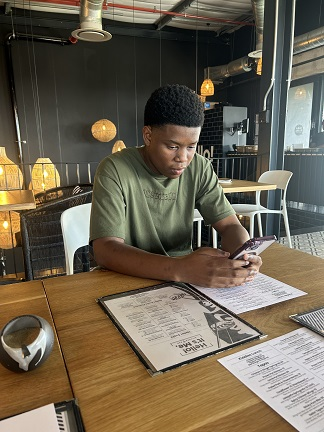

Summary
As a passionate individual, my objective is to become a highly successful web developer by leveraging my skills, knowledge, and dedication. I aim to create dynamic and visually appealing websites that not only captivate users but also provide seamless functionality and exceptional user experience. By staying updated with the latest web development technologies and trends, I strive to continuously enhance my abilities and deliver innovative solutions to clients or employers. With a strong focus on problem-solving and attention to detail, I am committed to producing clean, efficient, and well-structured code that adheres to industry best practices. Ultimately, my goal is to contribute to the digital landscape by creating impactful online experiences that positively impact businesses and users alike.
Education
- Completed Matric with a bachelors in 2021
- Currently pursuing a degree in Software Engineering at Eduvo University
- Goal: To become a successful web developer
- Objective: Leverage skills, knowledge, and dedication to create visually appealing and functional websites
- Stay updated with the latest web development technologies and trends
- Focus on problem-solving and attention to detail
- Commitment to producing clean, efficient, and well-structured code
- Contribute to the digital landscape by creating impactful online experiences.
Work experience
Work Experience:
None (No previous professional work experience)
Coursework:
Currently pursuing a web development course on Udemy, focusing on web development
Personal Projects:
Completed one personal web development projects, including:
Prtfolio website :
Created a portfolio website with html to showcase the skills i have been learning.
My profile photo:

Contact Information
My hobbies